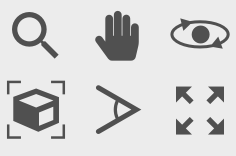
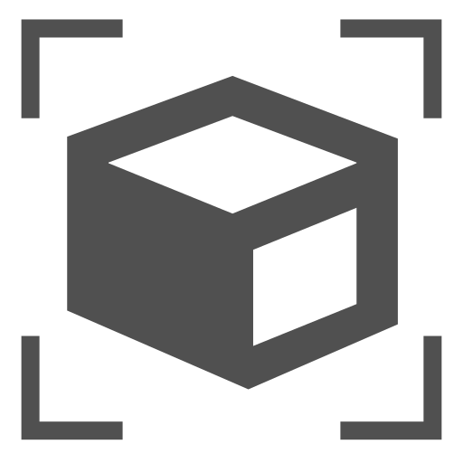

Viewport windows
The interactive viewport windows of OVITO show the three-dimensional visualization scene from different angles. The text caption in the upper left corner and the axis tripod in the lower left corner of each viewport indicate the orientation of the virtual camera. If you don’t like the standard 2-by-2 viewport layout, you can tailor the layout to your specific needs.
{kind=link}
Viewport toolbar
{kind=link}
The viewport toolbar is located below the viewports and provides buttons for explicitly activating various navigation input modes. In addition, you can find two other useful functions here:
{kind=link}
The Zoom Scene Extents button automatically adjusts the virtual camera of the active viewport such that all objects in the scene become fully visible. Use the Ctrl key (Command key on macOS) to do it for all viewports at once.
{kind=link}
The Maximize Active Viewport button enlarges the active viewport to fill the entire main window. Click the button a second time to restore the original 2-by-2 viewport layout.
{kind=link}
{kind=link}